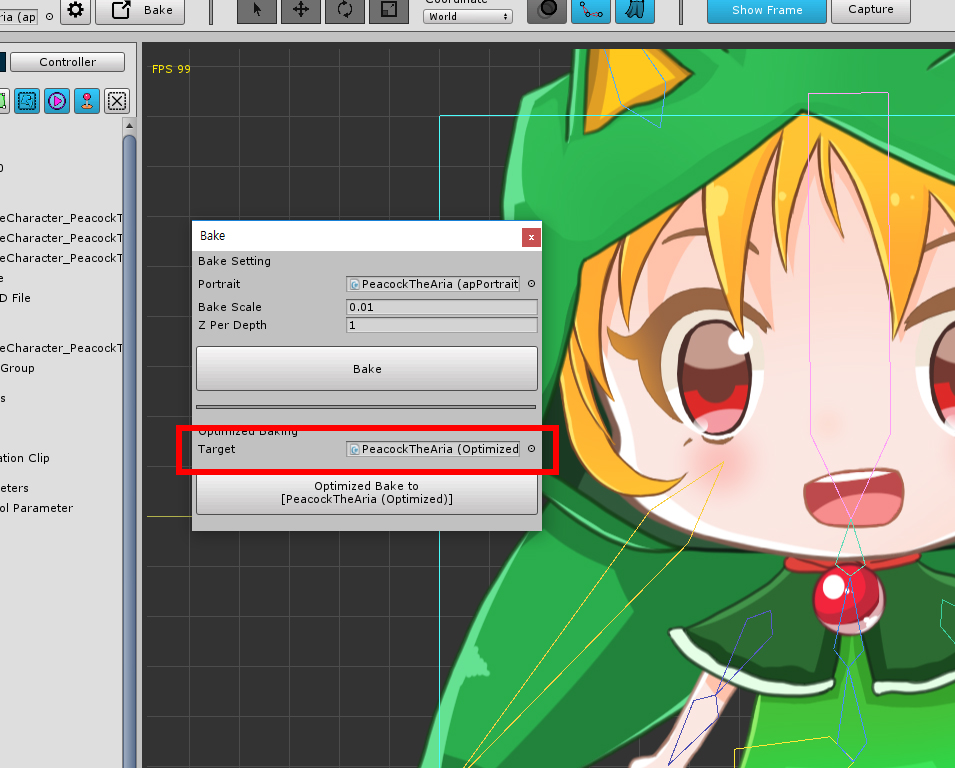

AnyPortrait > マニュアル > 最適化されたBake
最適化されたBake
1.0.0
AnyPortraitエディターのキャラクターをシーンに移動することを「Bake」と呼びます。
「エディタで使用するデータ」と「シーン内で実行されたデータ」が異なります。 したがって、データを移動するためのベーク処理が不可欠です。
すべての編集が終了した場合、「エディタで使用されるデータ」は不要になります。
したがって、「シーン内で実行されたデータ」のみが存在するBakeだけが存在する場合、メモリとプレハブ容量を節約できます。
このページでは、「最適化されたベイク(Optimized Bake)」について説明します。

(1) 「Bake」ダイアログボックスを開きます。
(2) 「Optimized Bake」ボタンをクリックし、最適化されたBakeを実行します。
「Target」フィールドがあります。
あなたは指定されたターゲットで 「Bake」ことができます。
「Target」が空の場合、新しいオブジェクトが作成されます。
エディタで作業しているオブジェクトをターゲットとして指定することはできません。

名前に「(Optimized)」という名前の新しい文字がシーンに表示されます。
このオブジェクトは「シーン内で実行されたデータ」のみを持ちます。

最適化された 「Bake」の後、自動的に 「Target」に接続されます。
注 : AnyPortraitエディターは、編集できない「最適化されたapPortrait」を区別します。
したがって、これらのオブジェクトはエディタに公開されません。